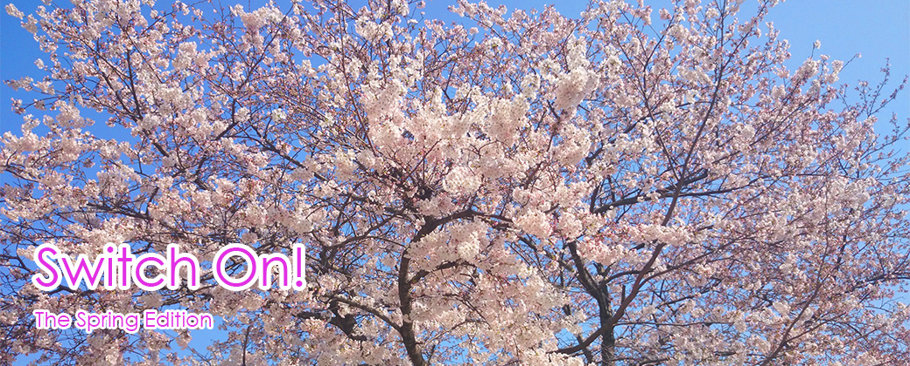

9th Anniversary Switch On! since 2006 on the web
News
2015/12/31:10th♪PG_blogに記事をUPしました。
2013/11/16:10th♪PG_blogに記事をUPしました。
2013/08/31:Switch Topicに新しいお知らせを追加しました。
2013/08/31:Berryz☆Graffitti2に記事をUPしました。
2013/07/01:Berryz☆Graffitti2に記事をUPしました。
2013/06/24:Berryz☆Graffitti2に記事をUPしました。
2012/12/31:Self-INTRODUCTiONを更新しました。
2012/12/31:Berryz☆Graffitti2に記事をUPしました。
2012/11/03:10th♪PG_blogに記事をUPしました。
2012/06/01:web日記を更新しました。
2012/02/07:10th♪PG_blogに記事をUPしました。